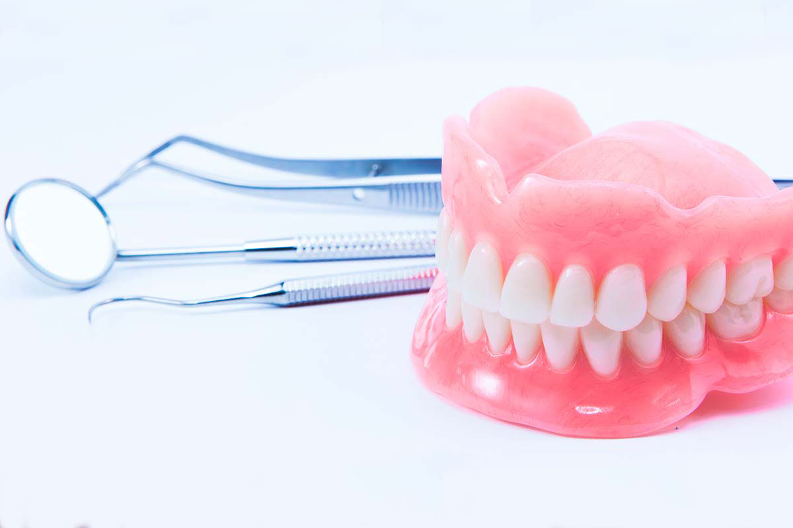

Prótese dentária 🦷
Tudo o que você precisa saber sobre prótese dentária
Fique por dentro de todas as informações sobre prótese dentária, caso resolva optar por esse tipo de tratamento estético. Você tem dentes faltantes na boca e muita vergonha de sorrir em público ou até conversar com as outras pessoas? Relaxa: um tratamento com prótese dentária é a melhor alternativa para você restabelecer o seu sorriso e ainda ter a sua autoestima de volta! Preparamos esse post que traz todas as informações sobre as próteses dentárias. Bora lá aprender mais um pouco?
Quais tipos de prótese dentária?
-
Prótese total
Prótese total, também conhecida como dentadura, é um substituto para os dentes ausentes e pode ser retirada e recolocada na boca. Ela tem um papel fundamental na reabilitação de pessoas que perderam todos os dentes de uma ou das duas arcadas, ajudando demais na recuperação da autoestima.
-
Prótese parcial removível
Esse tipo de prótese dentária pode ser removível e é feita por uma estrutura metálica que tem a função de reter os dentes originais que ainda estão saudáveis.
-
Implantes
Os implantes dentários são indicados para substituir um ou mais dentes, bem como suas respectivas raízes. Esse tipo de procedimento é realizado em casos em que a prótese parcial não atende a necessidade do paciente.
-
Prótese fixa
indicada quando existe a necessidade de preencher espaços por causa da ausência de um ou mais dentes, a prótese dentária fixa não é mais tão usada como anos atrás. Pelo fato de ser fixa, esse tipo de prótese dificulta a sua higienização, fazendo os implantes se tornarem uma opção mais interessante, tanto do ponto de vista funcional como do estético.